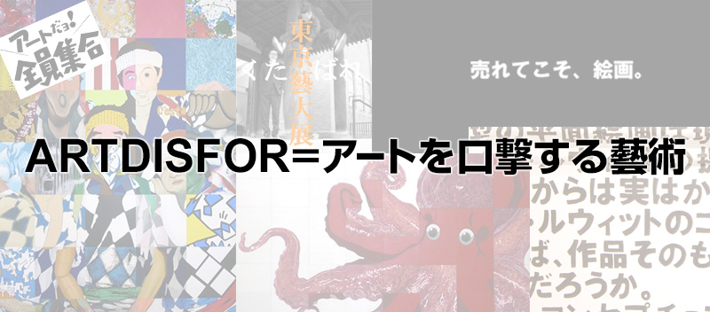

TOPICS
2018/7/4
長らく休止しておりますが、新宅も樋口も元気（たぶん）です。今年は樋口に子供ができたそうで、私は私でシンガポールで楽しくやっております。皆様におかれましても、充実した人生をお送りくださいますよう。
2013/10/25
完全に休止していますが、新宅も樋口も元気です。2013年、ついでに2014年もよろしくお願いいたします。
あと、二人ともfacebookをやっておりますので、物好きな方は検索して友達申請してください。怪しくなければ承認するかもしれません。